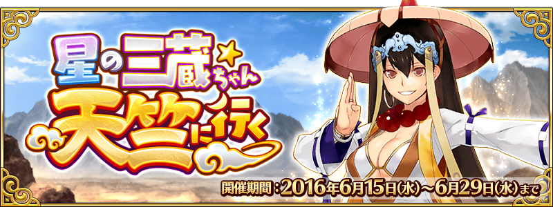
◆活動舉辦期間◆
2016年6月15日(三)17:00～6月29日(三)12:59
◆活動概要◆
舉辦期間限定活動「星之三藏，往天竺前進」！
是夢還是現實，誤闖進西遊記世界的Master，
能否平安無事地走到天竺呢？
在此活動，推進故事必須消費關鍵道具「功徳の札」。
在「修行之旅關卡」收集「功徳の札」，推進故事吧！
自6月22日(三)16:00，開放了挑戰關卡及道具交換的一部份追加。
挑戰關卡在推進故事到最後就能挑戰。
另外，追加的道具交換也會因故事的進行而開放。
想要挑戰容易取得稀有素材的關卡「六道輪迴」，必須消費新的關鍵道具「功徳の玉」。
收集新追加的活動專用道具「大蓮華」，拿取豪華報酬吧！
◆活動参加條件◆
只有通過「特異點F 炎上汙染都市 冬木」的Master才能參加
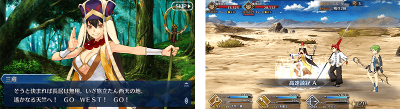
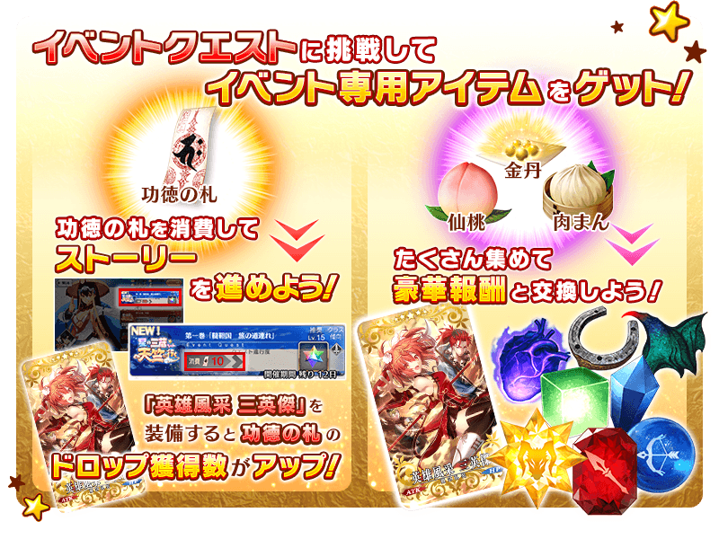
◆超值攻略方法・其1◆
活動期間中，追加能獲得「功徳の札」的加成關卡。
追加的加成關卡，在活動舉辦期間中無論何時都能挑戰。
無論如何，裝備掉落獲得數提升的概念禮裝，前往攻略吧！
◆超值攻略方法・其2◆
在隊伍編入特定的Servant，讓｢金丹｣｢仙桃｣｢肉まん｣的掉落獲得數提升！
【對象Servant】
玄奘三藏、神槍 李書文、大衛、呂布奉先
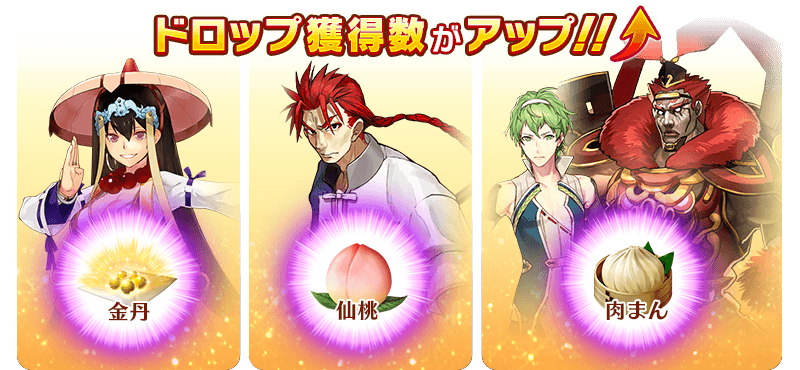
◆超值攻略方法・其3◆
裝備能在活動道具交換中入手的活動限定概念禮裝「英雄風采 三英傑」的話，「功徳の札」的掉落獲得數提升。
另外，裝備期間限定概念禮裝的話，活動專用道具｢金丹｣｢仙桃｣｢肉まん｣各自的掉落獲得數提升。
※請注意在各關卡的道具掉落率並非100%。
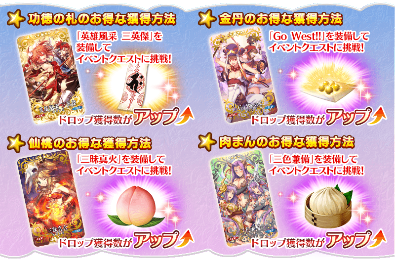
◆超值攻略方法・其1◆
若滿足容易取得稀有素材的關卡「六道輪迴」的開放條件，在活動期間結束前，追加能獲得「功徳の玉」的加成關卡。
開放的加成關卡，在活動舉辦期間中無論何時都能挑戰。
◆超值攻略方法・其2◆
在隊伍編入特定的Servant，讓｢大蓮華｣的掉落獲得數提升！
【對象Servant】
阿爾托莉亞･潘德拉剛〔Lancer〕、阿周那、迦爾納、南丁格爾、莫德雷德、絲西娜、尤瑞艾莉、美杜莎

◆超值攻略方法・其3◆
裝備能在活動道具交換中入手的活動限定概念禮裝「風雲仙姫」的話，「功徳の玉」的掉落獲得率提升。
另外，裝備在關卡通過報酬中獲得的活動限定概念禮裝「九首牛魔羅王」的話，活動專用道具｢大蓮華｣的掉落獲得數提升。
※請注意在各關卡的道具掉落率並非100%。
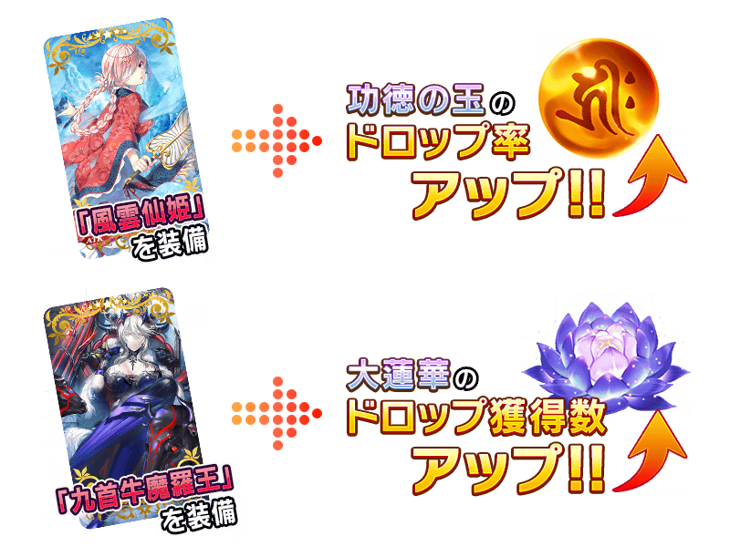
| 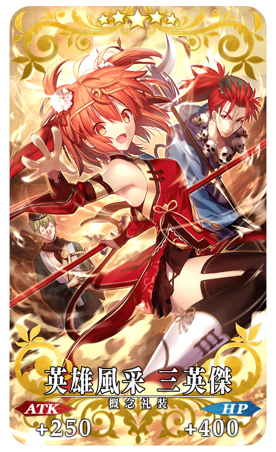 |
★★★★★SSR |
| 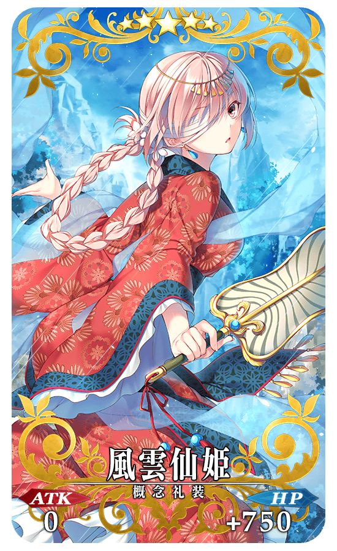 |
★★★★★SSR |
| 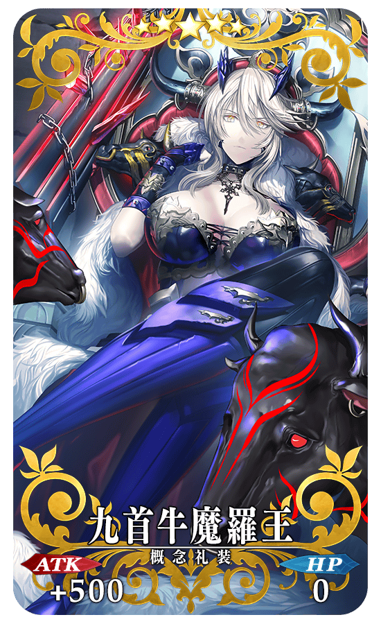 |
★★★★★SSR |
◆交換方法◆
交換期間：2016年6月15日(三)16:00～7月6日(三)12:59
※交換期間結束後｢金丹｣｢仙桃｣｢肉まん｣｢大蓮華｣會消失。
從達文西工房内的「活動道具交換」，用收集來的活動專用道具來交換以下的道具。
◆能用金丹交換的道具◆
| 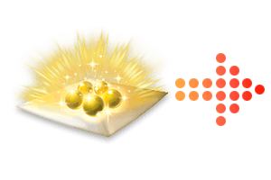 |
【活動限定概念禮裝】 【技能強化、靈基再臨素材】 【技能強化素材】 【其他道具】 |
◆能用仙桃交換的道具◆
| 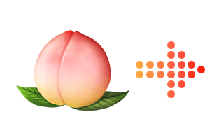 |
【活動限定概念禮裝】 【技能強化、靈基再臨素材】 【技能強化素材】 【其他道具】 |
◆能用肉まん交換的道具◆
|
【活動限定概念禮裝】 【技能強化、靈基再臨素材】 【技能強化素材】 【其他道具】 |
◆能用大蓮華交換的道具◆
|
【活動限定概念禮裝】 【技能強化、靈基再臨素材】 【其他道具】 |
◆「星之三藏，往天竺前進Pick Up召喚」期間◆
期間：2016年6月15日(三)16:00～6月29日(三)12:59
以期間限定舉辦「星之三藏，往天竺前進Pick Up召喚」！
新登場的Servant「★5(SSR)玄奘三蔵」以期間限定先行Pick Up！
還有在「星之三藏，往天竺前進」活躍的Servant「★4(SR)神槍 李書文」「★3(R)大衛」「★3(R)呂布奉先」也Pick Up！
詳情請在聖晶石召喚畫面左下的召喚詳細確認。
※玄奘三蔵在Pick Up期間結束後，預定於六章配信時追加至故事召喚。
※Pick Up期間中、神槍 李書文在第五特異點通過前也能入手可能。
裝備期間限定概念禮裝「★5(SSR)Go West!!」「★4(SR)三昧真火」「★3(R)三色兼備」的話，活動専用道具的掉落獲得數會提升。
在Pick Up期間中，新登場Servant、Pick Up Servant、期間限定概念禮裝的出現機率提升！
10次召喚★4(SR)以上1張確定和★3(R)以上的Servant1位確定！
※★4(SR)以上確定包含Servant和概念禮裝。
※所謂「出現機率UP」意指比同稀有度的Servant出現機率更高的設定。

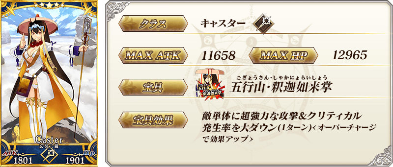
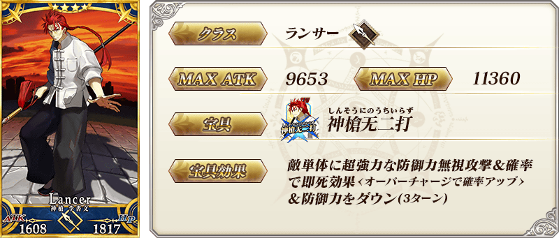

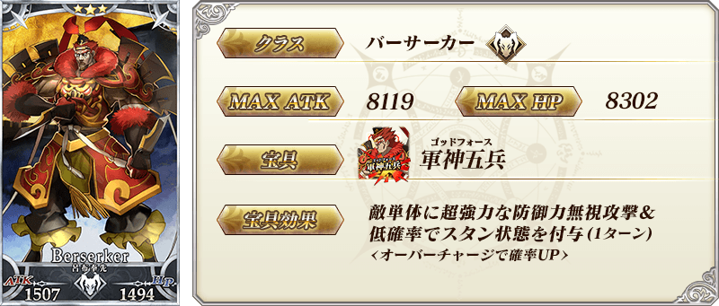
| 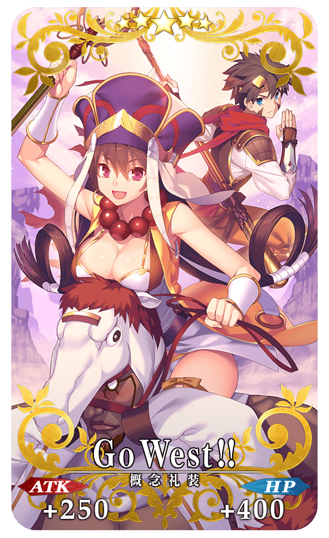 |
★★★★★SSR Go West!! ATK 250（最大：1000） HP 400（最大：1600） 技能 自身的寶具威力提升20%＆賦予每回合星星3個獲得狀態 ＋ 金丹的掉落獲得數增加1個【『星之三藏，往天竺前進』活動期間限定】 |
| 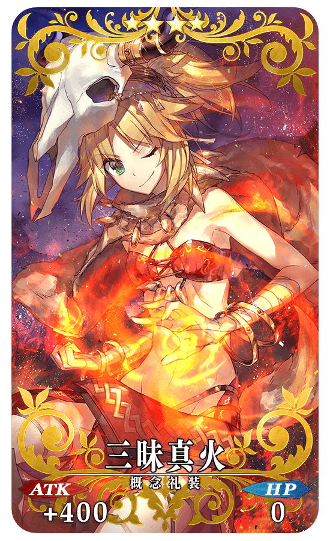 |
★★★★SR 三昧真火 ATK 400（最大：1500） HP 0 技能 自身的寶具威力提升15%＆Buster卡性能提升8% ＋ 仙桃的掉落獲得數增加1個【『星之三藏，往天竺前進』活動期間限定】 |
 |
★★★R 三色兼備 ATK 200（最大：1000） HP 0 技能 自身的星星集中度提升100%＆Critical威力提升5% ＋ 肉まん的掉落獲得數增加1個【『星之三藏，往天竺前進』活動期間限定】 |
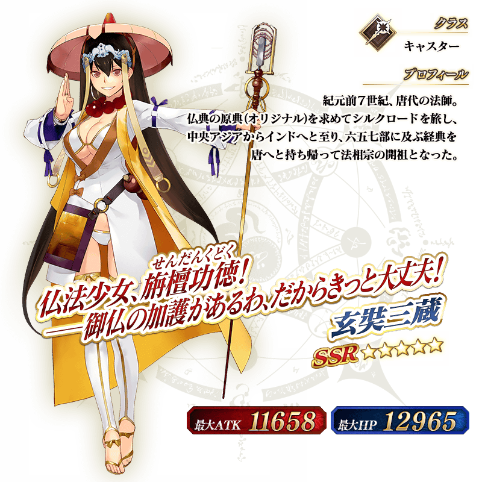

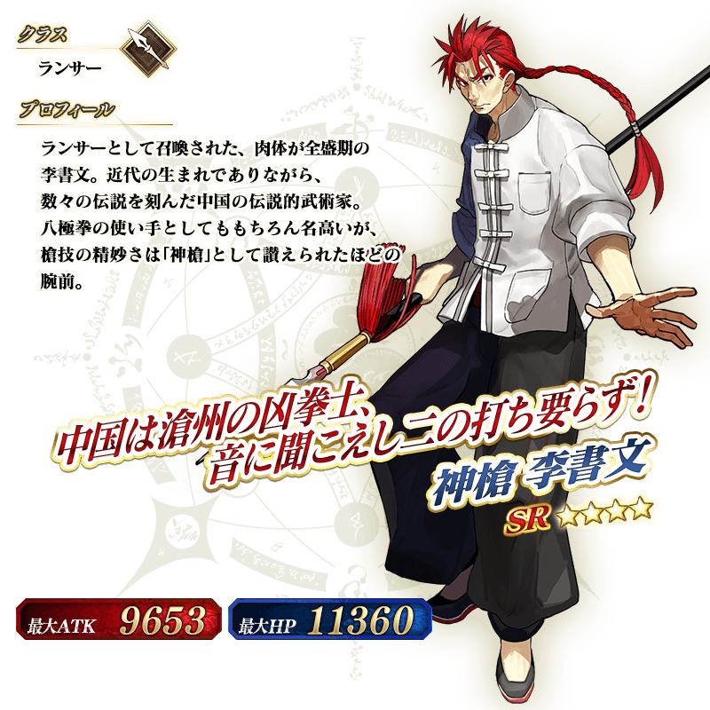